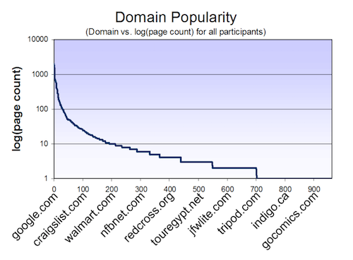

Jeffrey P. Bigham, Anna C. Cavender, Jeremy T. Brudvik, Jacob O.Wobbrock and Richard E. Ladner
Web browsing is inefficient for blind web users because of persistent accessibility problems, but the extent of these problems and their practical effects from the perspective of the user has not been sufficiently examined. We conducted a study in situ to investigate the accessibility of the web as experienced by web users. This remote study used an advanced web proxy that leverages AJAX technology to record both the pages viewed and the actions taken by users on the web pages that they visited. Our study was conducted remotely over the period of one week, and our participants used the assistive technology and software to which they were already accustomed and had already configured according to prefer- ence. These advantages allowed us to aggregate observations of many users and to explore the practical effects on and coping strategies employed by our blind participants. Our study reflects web accessibility from the perspective of web users and describes quantitative differences in the browsing behavior of blind and sighted web users.
K.4.2 [Social Issues]: Assistive technologies for persons with disabilities; H.5.2 [Information Interfaces and Presentation]: User Interfaces
General Terms
Human Factors, Experimentation
web studies, web accessibility, blind users
Browsing the web is inefficient for blind web users because of persistent accessibility problems. However, the extent of these problems and their practical effects on browsing experience are not yet adequately understood from the perspective of blind web users. For web access guidelines, standards, and future improvements to be truly relevant and useful, more information about real-life web interaction is needed. In this work, we seek to understand the accessibility of the web from the user perspective by measuring the accessibility of the pages that users visit and comparing the behavior observed in blind users to their sighted counterparts.
We used an advanced web proxy to enable our study and quantitatively measured both the presence and observed effectiveness of components thought to impact web accessibility. Most proxy systems can only record HTTP requests and cannot easily discern user actions performed on web pages. We used an enhanced version of UsaProxy to record participants' browsing. UsaProxy can record actions that are impossible to record with a traditional proxy, such key presses, clicks on arbitrary page elements(including within-page anchor links), and the use of the "back" button to return to a page that was previously viewed. Recording user actions has traditionally required study participants to install specialized browser plugins, but UsaProxy is able to record most user actions by using Javascript code that is injected into pages that are viewed. Because it uses Javascript to parse the viewed web pages, it can also record dynamic page changes, interaction with dynamic content and AJAX requests, which are an increasingly important accessibility concern. A proxy approach enables transparent setup by participants and allows them to use their own equipment with its existing configuration.
Prior work has sought a better understanding of the web user experience. The importance of measuring accessibility in situ from the user perspective is illustrated by the relative popularity of web sites visited by web users in our study, as shown in Figure 1. The distribution is Zipf-like, which results in three sites (google.com, myspace.com and msn.com) accounting for approximately 20% of the pages viewed by the participants in our study. The google.com domain alone accounted for almost twice as many page views as the 630 domains that were viewed five or less times during our study. The accessibility of popular sites more strongly affects users than do sites on the long tail of popularity. While our study is not a replacement for laboratory studies that use common tasks, it offers an important view of accessibility that better matches the experiences of real users.
Figure 1: Log frequency of visits per domain name recorded for all participants ordered by popularity.
Blind web users have proven adept at overcoming accessibility problems, and one of the goals of this study was to better understand the coping strategies employed by blind users as they browse the web. For instance, the lack of alternative text is an often-cited accessibility concern, but blind users can often obtain the same information contained within an image from surrounding context. Within-page anchors called "skip links" are designed to help blind users effectively navigate complex web pages by enabling them to jump to relevant content, but these links may be used infrequently because other screen reader functionality also enables users to move non-linearly through a page. If the context surrounding links on a page isn't clearly expressed to blind users,they may explore the page by clicking on links simply to see where they point and then return. WebinSitu explores whether blind web users avoid inaccessible content and also if they make use of coping strategies.
The direct effects of technology and developer practices for improving accessibility are difficult to measure in practice because users employ many different browsing and coping strategies that may vary based on the user's familiarity with the page be accessed. Related work has looked at task-based analysis of accessibility, with a major focus on supporting effective accessibility evaluation (see Ivory for a survey of this work). Realistic studies with blind web users are difficult to conduct in the lab due to difficulties in replicating the diversity of assistive technology and configurations normally used by participants. Previous work has advocated remote studies because they allow participants to use their existing assistive technology and software. These studies noted that blind participants can be ineffective at providing feedback when a page is considerably inaccessible, indicating that simply asking blind users to list the problems they face may not be sufficient.
Overall, we found that blind web users browse the web quite similarly to sighted users and that most pages visited during our study were inaccessible to some degree. In our study these problems are placed in the context of their predicted effects because we implicitly weighted pages relative to their popularity. Perhaps most surprising, blind participants generally did not shy away from pages exhibiting accessibility problems anymore than did sighted users. Blind participants were, however, much less likely to visit pages containing content not well addressed by assistive technology. Blind users tended not to visit sites heavily dependent on Asychronous Javascript and XML (AJAX), but visited many pages that included Flash content. Blind users also interacted less with both dynamic content and inaccessible web images. Skip links, added to web pages to assist screen reader users, were only used occasionally by our participants. Our analysis highlighted several areas that may suggest the coping strategies used by blind web users when faced with inaccessible content.
The contributions of this paper are as follows: 1) We report on web accessibility as experienced by real web users. 2) We compare the browsing experience of sighted and blind web users on several quantitative dimensions. 3) We demonstrate the effectiveness of proxy-based recording for exploring the interaction of blind web users. 4) We formulate practical user observations that can influence the direction of future web accessibility research.
omitted
In this study, we considered two categories of data related to web browsing that yield insight into accessibility problems faced by blind web users. Many definitions of blindness exist; we use the term blind users for those users that primarily use a screen reader to browse the web and sighted users for those who use a visual display. First, we recorded statistics relating to basic web accessibility of pages viewed in our study, such as alternative text for images, heading tags for added structure and label elements to associate form input with their labels. Second, we considered the browsing behavior of both blind and sighted users, including average time spent on pages and interaction with elements.
3.1 Accessibility of Content
Accessibility guidelines for web developers offer suggestions on how to create accessible web content. Most noted is the Web Content Acccessibility Guidelines (WCAG) on which many other accessibility guidelines are based. Web developers often don't include the advice presented in these guidelines in their designs. Our study effectively weights pages based on the frequency with which they are viewed, allowing us to measure the accessibility of web content as perceived by web users. The individual metrics reported here suggest the accessibility of web pages that users view, but cannot capture the true usability of these pages. Because inaccessible pages can be inefficient or impractical to use, blind users may choose to visit sites that are more accessible according to ours metrics. In our analysis, we compared the browsing behavior of blind and sighted users according to the metrics below.
3.1.1 Descriptive Anchor Text and Skip Links
Navigating from link to link is common method of moving through web pages using a screen reader. Many screen readers provide users with a list of links accessed via a shortcut key. However, links can be difficult to interpret when separated from the surrounding context. For instance, the destination of a link labeled "Click Here" is impossible to determine without accompanying context. Prior work has shown that descriptive link text helps users efficiently navigate web pages and related work has explored automatically supplying richer descriptions for links. In our study we collected all links on the pages viewed by our participants as well as all links clicked on by our participants. We sampled 1000 links from each set and manually labeled whether or not each was descriptive.
Skip links are within-page links that enable users to skip ahead in content. They normally appear near the beginning of the HTML source of a page and are meant for blind web users. We identified skip links using two steps. First, we selected all within-page anchors whose anchor text or alternative text (in the case of images used as skip links) contained one of the following phrases (case insensitive): "skip," "jump to," "content," "navigation," "menu." These phrases may not appear in all skip links, but this works for our purposes of efficiently selecting a set of such links. To ensure that the chosen links were skip links, we manually verified each one chosen in the first step.
3.1.2 Structure, Semanics, and Images
Browsing is made more efficient for blind web users when the structure of the page is encoded in its content and when the semantics of elements are not dependent on visual features. Heading tags (